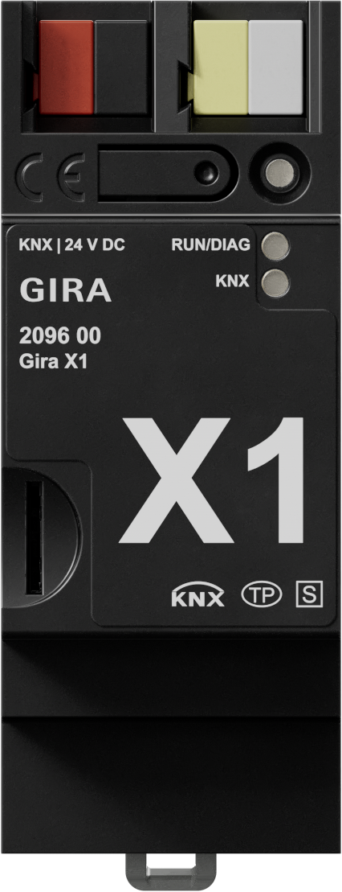
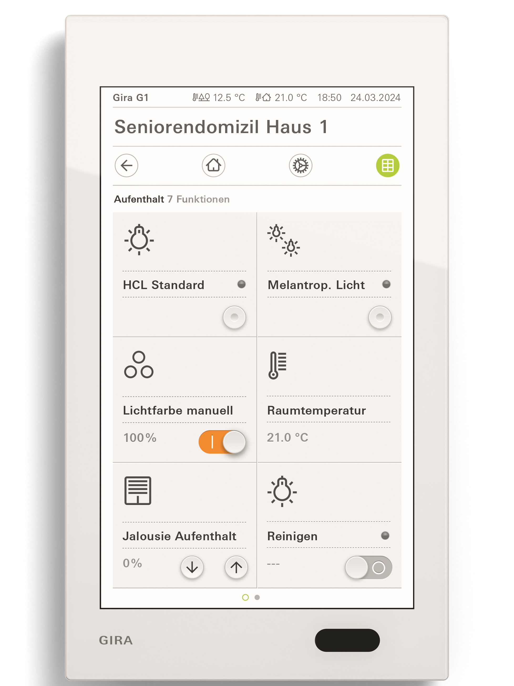
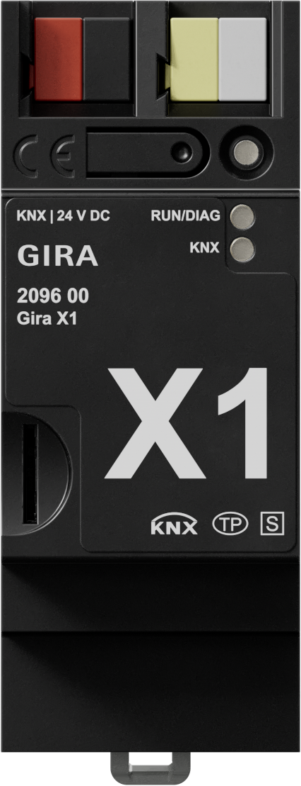
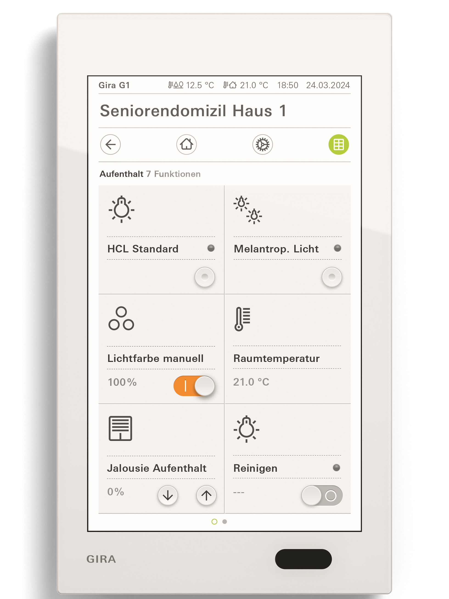

Gira Giersiepen GmbH & Co. KG
Gira G1
Gira G1 ist eine intuitive Bedienzentrale für intelligente Gebäudetechnik. Darüber lassen sich sämtliche Gebäudefunktionen wie Licht, Heizung, Jalousien, Klima und Türkommunikation zentral bedienen. In Kombination mit Gira X1 oder Gira HomeServer werden Automatisierung, Fernzugriff und individuelle Szenarien für Wohn-, Pflege- und Arbeitsumgebungen ermöglicht. Das System eignet sich für Neubau, Nachrüstung und Modernisierung und verbindet Komfort, Effizienz und Design.
Kontakt
Industriegebiet Mermbach, Dahlienstraße | 42477 Radevormwald | Deutschland
Jürgen Langenhorst | Key Account Projektmanager Health Care
Telefon +49 173 7296550 | juergen.langenhorst@gira.de